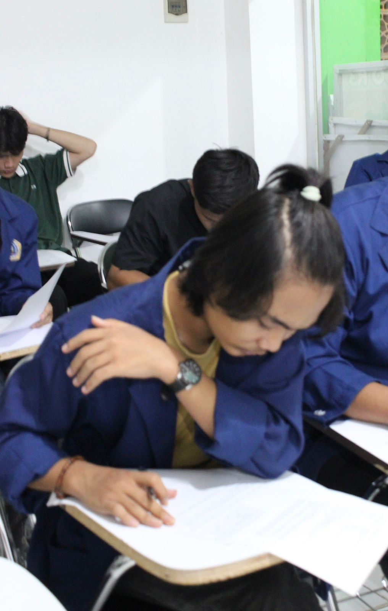

Ahmad Nazzarudin Fahri
Portofolio

Ahmad Nazzarudin Fahri
E-mail: fahrimucai@gmail.com
Phone Number: 082157444352
Address: Landasan Ulin, Banjarbaru
Educational Background: Computer and Network Engineering
________________________________________________________________________________
Mahasiswa energik dan penuh semangat yang sedang menempuh S1 di fakultas Teknik Informasi di kampus UNISKA. Berusaha mengasah keterampilan di bidang Teknik Informatika.

Personal Skills
- ■ Hardware and Software
- ■ Coding
- ■ Creative and Skilled
- ■ Graphic Design